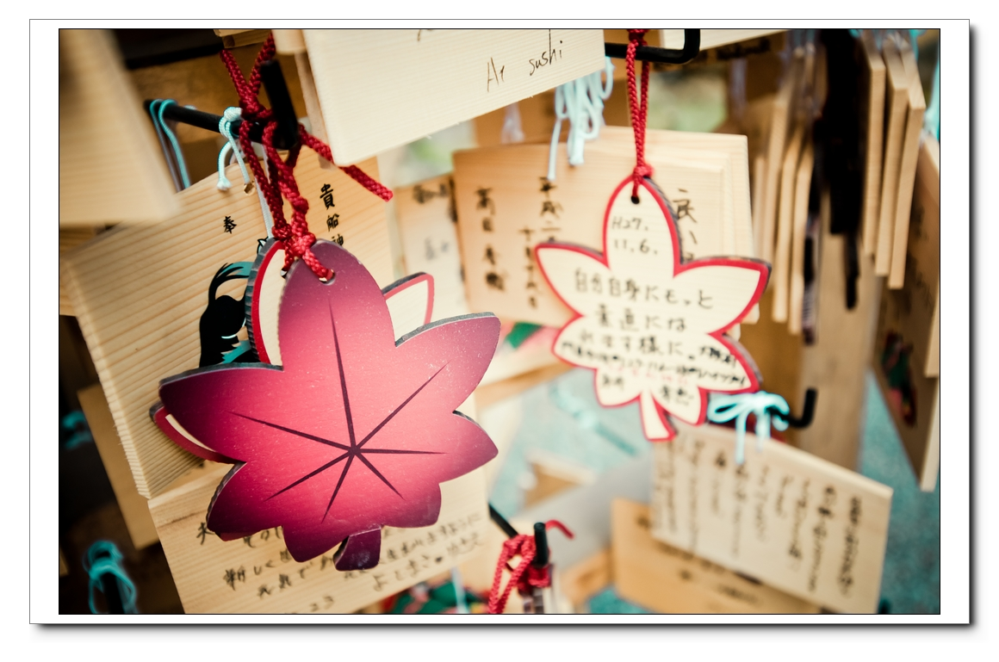
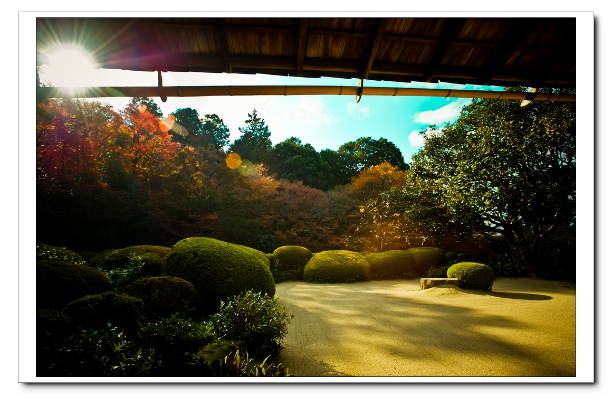
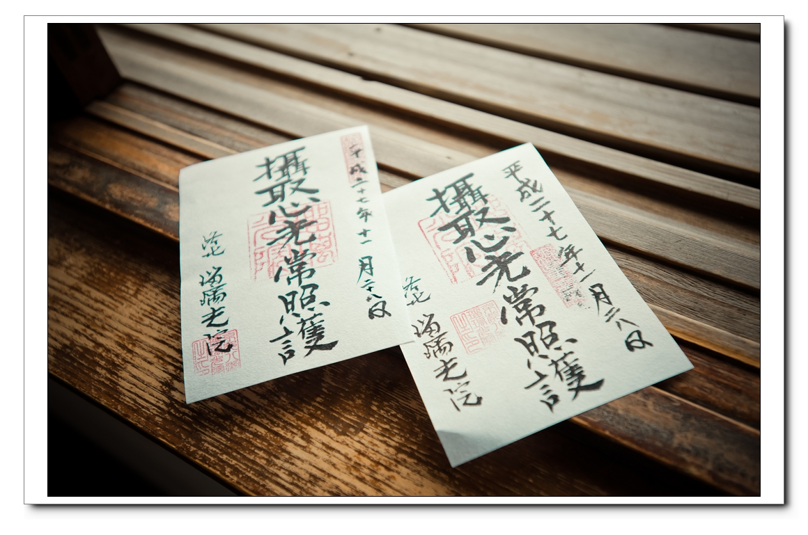
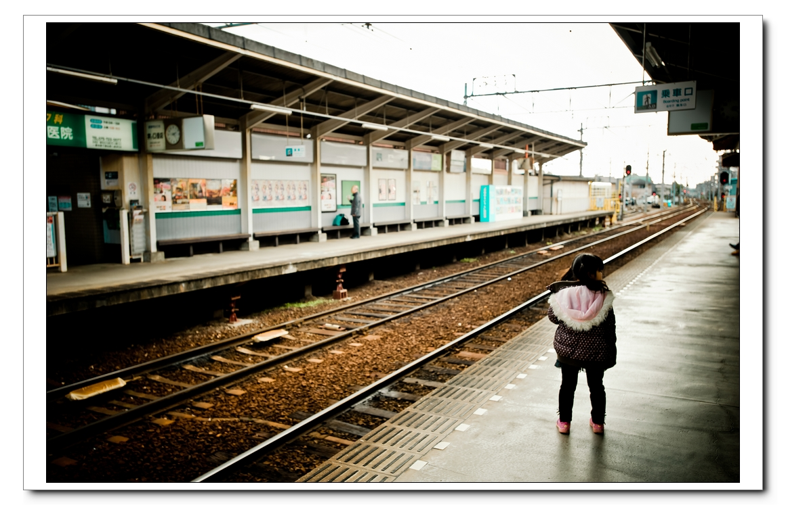
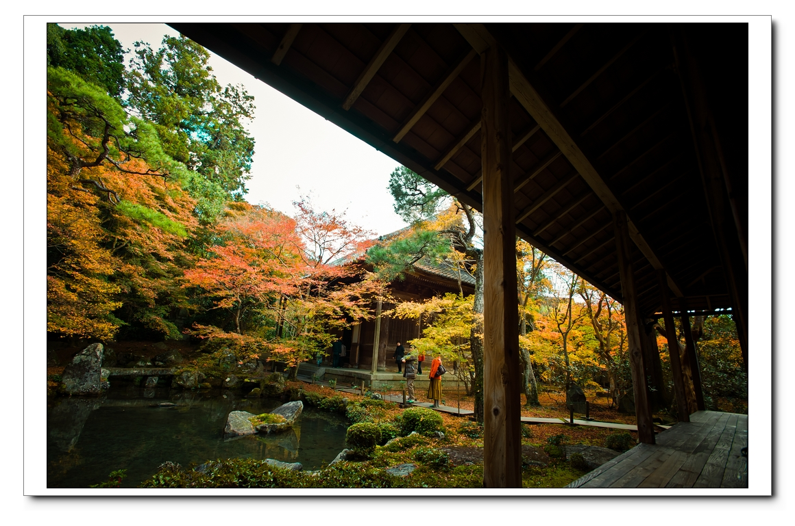
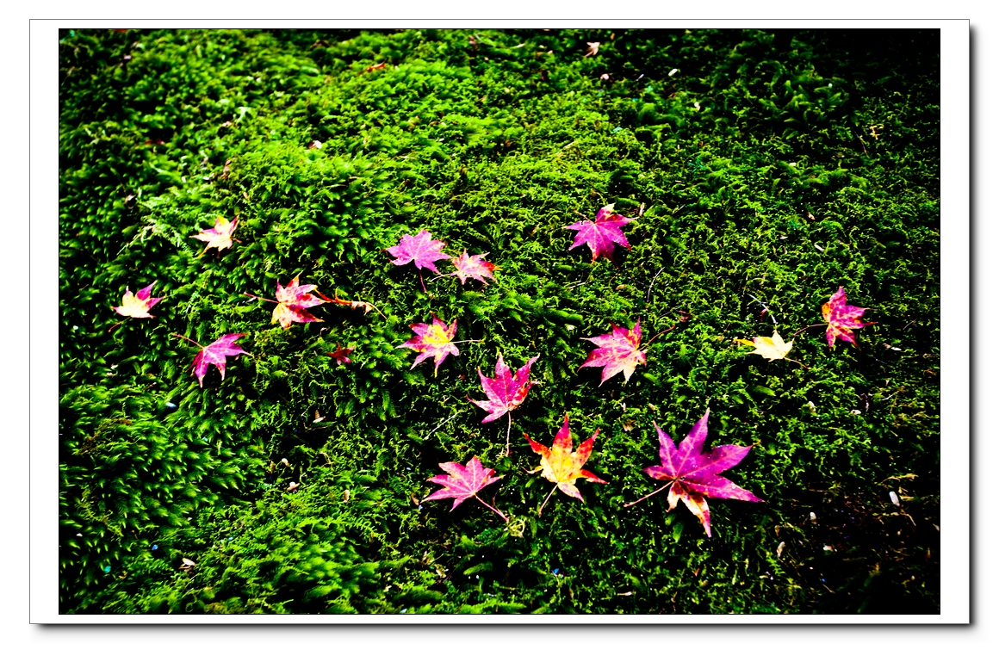
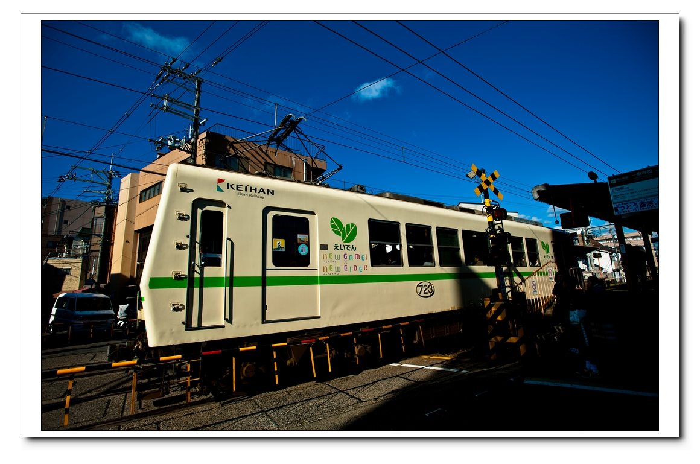
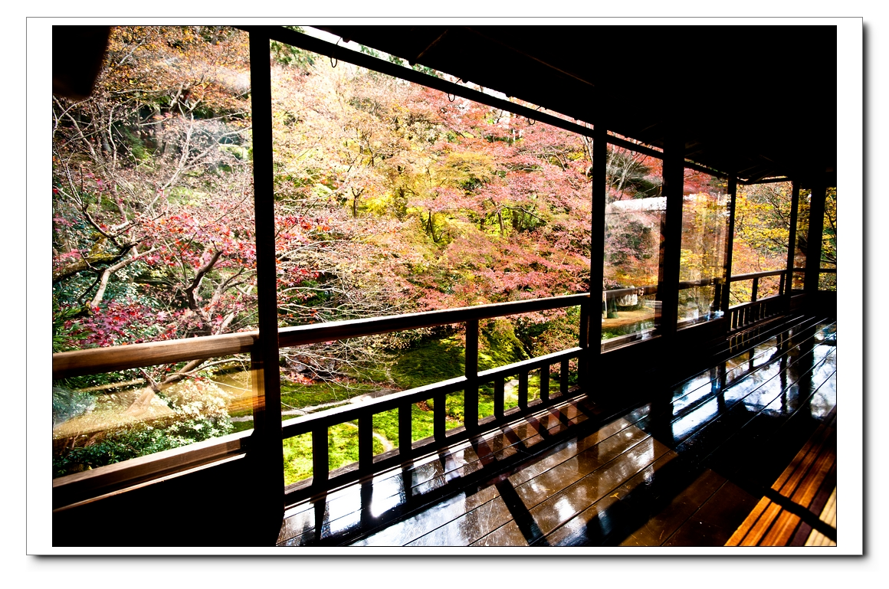
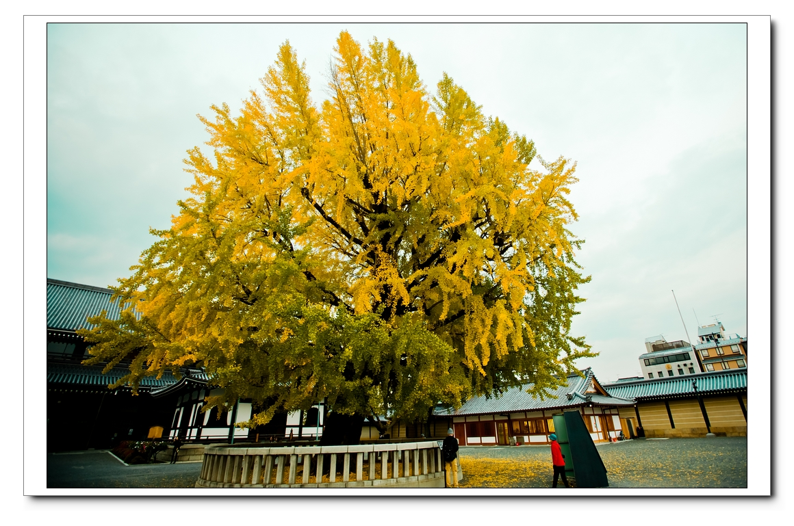
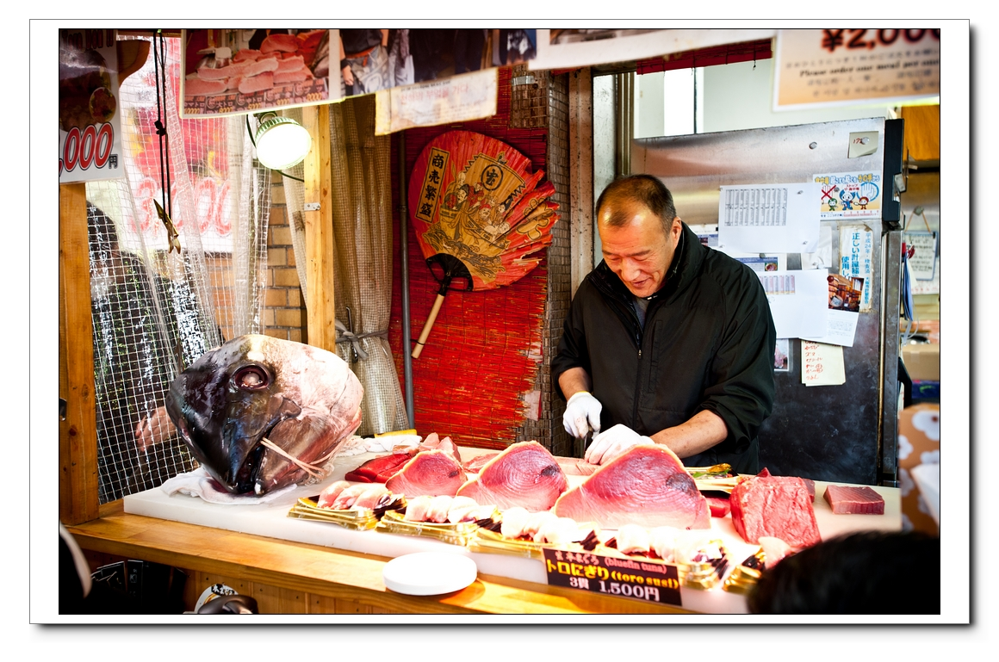

大阪京都六天小旅行

京都琉璃光院,京都賞楓景點大推薦琉璃光院,有著夢幻般的院名,也有著美妙的紅葉風情賞楓必去

叡山電鐵沿線除了有許多賞楓景點之外，本身叡電也會在賞楓期間推出楓葉隧道夜間點燈的活動

叡山電車沿線賞楓之旅，這一次我們來到貴船，貴船以夏天的流水素麵、秋天的楓紅美景出名

京都琉璃光院,京都賞楓景點大推薦琉璃光院,有著夢幻般的院名,也有著美妙的紅葉風情賞楓必去

京都Day 1
京都琉璃光院,京都賞楓景點大推薦琉璃光院,有著夢幻般的院名,也有著美妙的紅葉風情賞楓必去

京都Day 2
叡山電鐵沿線除了有許多賞楓景點之外，本身叡電也會在賞楓期間推出楓葉隧道夜間點燈的活動

京都Day 3
叡山電車沿線賞楓之旅，這一次我們來到貴船，貴船以夏天的流水素麵、秋天的楓紅美景出名

京都Day 4
京都琉璃光院,京都賞楓景點大推薦琉璃光院,有著夢幻般的院名,也有著美妙的紅葉風情賞楓必去

京都Day 5
「西本願寺」並非因為這裡是世界文化遺產，西本願寺裡「御影堂」前面那三百多年歷史的巨大銀杏樹

京都Day 6
位於大阪「日本橋駅」附近的「黑門市場」 號稱是「大阪人的廚房」

Created by:
Howard Chang